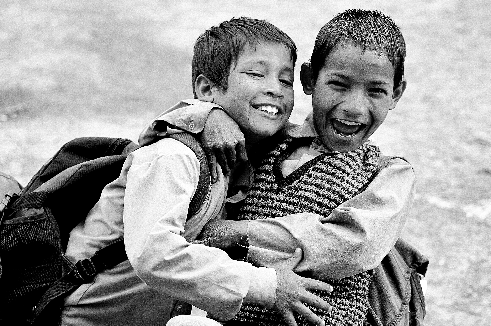

Faites un don pour les enfants pauvres
Donner, c'est offrir à ceux qui en ont besoin,mais c'est aussi enrichir notre cœur Faire un don maintenant
Contribuez à un monde meilleur
Engagez-vous à nos côtés et contribuez à faire une différence dans la vie de ceux qui en ont besoin.
Le plaisir de donner
Donner avec joie, c'est semer du bonheur et de l'espoir autour de soi.
Don
Chaque don est un acte de solidarité qui aide à transformer des vies et à construire un avenir meilleur.
L'acte de donner est un acte vertueux.
La véritable vertu réside dans l'acte de donner sans attendre en retour. C'est ainsi que l'on bâtit des ponts de solidarité et de compassion.


Amour et Solidarité
L'amour véritable se manifeste par l'acte de donner, en offrant aux enfants pauvres un avenir rempli d'espoir et de possibilités.
Compassion
La compassion, c'est aider les enfants dans le besoin et leur offrir une chance d'un avenir meilleur.
Charité
La charité, c'est tendre la main à ceux qui en ont besoin, en offrant soutien et espoir aux enfants défavorisés.
Notre Galerie
Découvrez nos moments capturés, où chaque image raconte une histoire de solidarité et de partage.
Les Plus Grands Philanthropes
Des personnalités dont l'action transforme des vies et offre un avenir meilleur à ceux qui en ont besoin.
Bill Gates, Microsoft“La philanthropie est un moyen de redonner ce que l'on a reçu. Ce n'est pas seulement une question d'argent, mais aussi de temps et d'effort pour améliorer la vie des autres. Chaque contribution, aussi petite soit-elle, a le pouvoir de transformer des vies et d'inspirer des changements positifs.”
Warren Buffett, Berkshire Hathaway“L'acte de donner est bien plus qu'une simple action. C'est une manière de bâtir un avenir pour ceux qui en ont besoin. Nous devons utiliser nos ressources et notre influence pour créer un monde où chaque individu peut prospérer, peu importe sa situation initiale.”

Mark Zuckerberg, Facebook“Donner ne se limite pas à offrir de l'argent ; il s'agit aussi de partager des idées, des opportunités et des connaissances. C'est ainsi que nous créons un impact durable. À travers la philanthropie et l'engagement social, nous avons tous le pouvoir de façonner un avenir meilleur pour tous.”
Nos Projets. Soutenez-nous
Chaque projet est conçu pour améliorer la vie des enfants défavorisés. Ensemble, nous pouvons créer un avenir plus lumineux pour ceux qui en ont le plus besoin.

Éducation pour les Enfants
Fournir des opportunités éducatives aux enfants issus de milieux défavorisés, leur permettant de changer leur destin grâce à l'éducation.
Nutrition et Soins de Santé
Assurer une alimentation équilibrée et des soins médicaux de base pour les enfants vulnérables, afin de garantir leur bien-être physique et mental.
Protection de l'Enfance
Protéger les enfants contre la maltraitance et l'exploitation, en leur offrant un environnement sûr et un accès à des services de soutien.
Abri pour les Enfants
Fournir des refuges sûrs et adaptés aux enfants sans domicile, où ils peuvent grandir dans un environnement aimant et sécurisé.
Soutien Psychologique
Offrir un accompagnement psychologique aux enfants ayant vécu des traumatismes, pour les aider à se reconstruire et à reprendre confiance en eux.

Accès à l'Eau Potable
Assurer l'accès à l'eau potable et à l'assainissement pour les enfants vivant dans des conditions précaires, afin de prévenir les maladies et de favoriser leur santé.
Derniers Articles du Blog
Découvrez les dernières nouvelles et articles sur nos projets, les initiatives pour aider les enfants défavorisés, et l'impact de vos dons.

Mission Médicale pour les Enfants en Afrique de l'Est
15 Septembre 21Un voyage pour apporter des soins médicaux essentiels aux enfants vulnérables d'Afrique de l'Est, un geste d'amour et de solidarité.
Donner de l'Éducation aux Enfants Défavorisés
10 Septembre 18Un programme éducatif pour les enfants vivant dans la pauvreté, afin de leur offrir un avenir meilleur grâce à l'apprentissage.
Accès à l'Eau Potable pour les Enfants
5 Septembre 14Un projet vital pour garantir l'accès à l'eau potable, réduisant les maladies et améliorant la qualité de vie des enfants vulnérables.